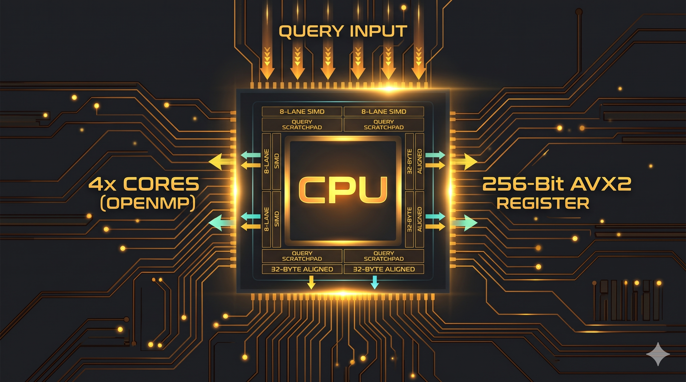
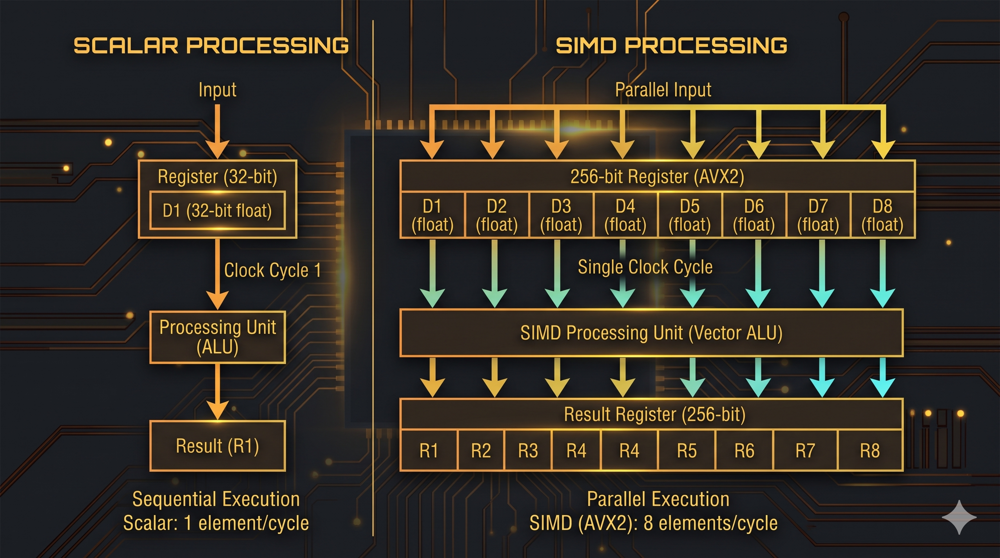

Slashing Index RAM by 81.5% while sustaining 99.80% Accuracy.
Scanning thousands of image vectors one-by-one is slow, while classic Locality-Sensitive Hashing wastes memory by duplicating dozens of tables. Our Multi-Probe LSH engine inspects neighboring folders around borderline matches—achieving near-perfect recall with just 6 compact tables instead of 32.
-81.5%
2.12 MB → 0.39 MB (L=6)
99.80%
P=8 smart neighbor probes
7.16 bits
255 / 256 folders utilized
8× SIMD
32-byte aligned AVX2 + OpenMP
How an Image Becomes a Searchable Vector Fingerprint
Select any sample scene below to watch it pass through the Vector Embedding Algorithm into a 128-number vector and Top-3 visual matches.
1. Source Photograph
Raw visual pixels before mathematical feature extraction.
Alpine_Ridge_01.jpg
Gradient Edges: High
2. Vector Embedding Algo
Press Extract Embedding to scan image keypoints and compress them into 128 mean-centered numbers for balanced bucket assignment.
3. Top-K Visual Results
Retrieved from primary folder + 8 probed neighbor folders across 6 compact tables.
4-Algorithm Live Benchmark & Telemetry Plots
Press Run All 4 Algorithms to plot Cumulative Recall@10 (%) over Execution Time (0s–10s) on INRIA SIFT10K. Pause anytime to inspect the curves.
Classical LSH (L=32 Tables, P=1)
High accuracy via 32 duplicate hash tables, but consumes heavy index RAM.
Compact LSH (L=6 Tables, P=1)
Slashes RAM by 81.5%, but single-bucket lookup drops borderline matches.
Multi-Probe LSH (L=6 Tables, P=8 Probes)
Keeps the tiny 0.39 MB footprint (-81.5% RAM) while recovering 99.80% Recall@10.
Exact Brute-Force (Linear Scan)
Scans 100% of stored vectors sequentially. Sets the 100% accuracy ground truth.
From Query → CPU → Sequential vs. Parallel SIMD → Final Top-K Results
Follow how an incoming query enters the CPU, splits into Sequential Scalar vs. AVX2 SIMD + OpenMP paths, and merges into the final Top-10 Ranked Results.

Inside the Processor: Incoming query vectors enter the CPU and distribute across 4 parallel OpenMP cores, each paired with a private zero-allocation QueryScratchpad.

Scalar vs. SIMD ALU: Instead of processing 1 float per clock cycle, our 256-bit AVX2 registers pack 8 floats simultaneously into the Vector ALU in a single clock tick.
Single-Thread Scalar Loop
Processes one contiguous memory slot at a time (for i = 0..127) on a single CPU core.
AVX2 8-Lane Vectorization + OpenMP Threads
What we engineered: 32-byte aligned memory, 256-bit AVX2 registers (8 floats/tick), 4 OpenMP worker cores, and O(1) stamp scratchpads.
What We Do With Both Results: Exact Reranking & Parity Verification
Both paths produce bitwise-identical cosine similarity scores (verified by our CTest SIMD-vs-Scalar module). Our engine immediately feeds those scores into a Top-10 Min-Heap Reranker to return the closest visual matches—delivering the exact same accuracy at 8.67× faster speed.
Interactive 3D Hyperplane Boundary Explorer
Drag to rotate the vector cloud. Switch between 1-Probe and Multi-Probe to see how neighbor checks rescue borderline matches.
Why Our C++20 Engine Scales Where Standard LSH Fails
Three architectural optimizations built into lsh_engine.hpp that separate a textbook prototype from a production vector engine.
100,000-Vector Corpus Scaling (8.67× Speedup)
Switch dataset size below to see how Brute-Force latency explodes linearly while Multi-Probe LSH scans only ~6.8% of vectors.
Generation-Stamp Deduplication
Probing 8 buckets across 6 tables hits duplicate vector IDs. Instead of slow std::unordered_set heap allocations or clearing arrays after every query, we stamp visited[id] = query_stamp in 1 CPU cycle with automatic 32-bit overflow protection.
Mean-Centered Bucket Entropy (7.16 Bits)
Raw SIFT features cluster in one quadrant, leaving 88 folders empty (5.45 bits). Mean-centering shifts the cloud across the origin—unlocking 99.6% folder utilization and 1.96× faster centered retrieval.